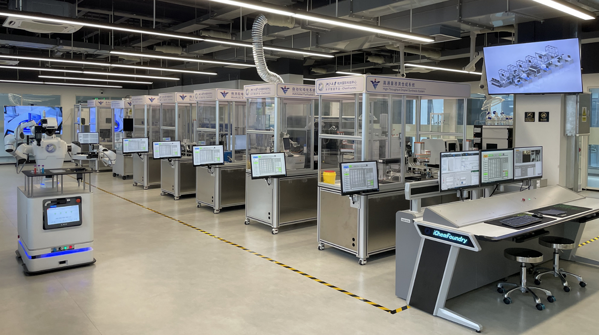
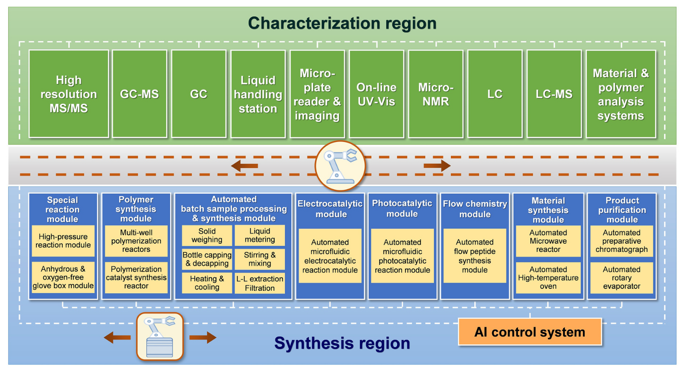

iChemFoundry (IC)：该平台旨在通过深度整合自动化机器人、微流控技术、高通量合成与表征以及AI技术，实现化学合成系统从数字化设计到自动化高通量执行与表征的全流程覆盖，目标是将传统实验室每日约10个反应条件的通量提升至每日100-1000个反应条件。本文将聚焦于对iChemFoundry平台设计理念、核心技术、已实现功能及其在推动化学研发范式变革方面潜力的详细解读。

iChemFoundry的核心架构与技术集成

iChemFoundry平台的设计充分体现了模块化、自动化和智能化的理念，其关键组成部分与技术特点如下：
- 宏观布局与核心硬件：
- 双功能区与轨道机器人系统：平台采用一个长达12米的轨道机器人作为核心枢纽，将整体空间划分为合成区和表征区两大功能区域。这种设计不仅优化了空间利用，也为后续的模块化扩展（如增加轨道长度和功能岛数量）提供了便利。
- 分布式功能岛设计：在每个功能区域内，设置了8-10个功能岛（function islands），每个功能岛上集成了特定的自动化仪器或模块。
- 合成区：配备了自动化样品制备系统（支持液体、粘稠液体、固体等多种形态反应物的精确制备及容器处理）、自动化批次合成系统、微波合成系统、自主研发的微流控光/电催化合成系统、高温高压合成系统以及合成产物纯化系统（负压过滤、LC纯化、液液萃取、旋转蒸发浓缩、重结晶等）。
- 表征区：集成了多种分析仪器，包括UV-Vis、IR、流通池NMR、MS、GC、LC、LC-MS、GC-MS、微孔板读数器和光学成像系统等，以满足不同合成产物的多样化分析需求。
- 多层次自动化物质转移策略：
为了实现全流程自动化，iChemFoundry采用了组合自动化策略来完成物质（反应物、产物、纯化产物等）及其容器在不同功能岛和仪器间的精确、按需转移：
- 轨道机器人：作为连接不同功能岛的主要运输工具。
- 移动双臂机器人：辅助处理距离平台较远或操作更灵活的大型仪器（如高分辨率NMR、高分辨率质谱仪）的样品转移。
- 固定机械臂：安装在特定功能岛上，用于辅助轨道机器人与空间结构复杂、难以直接对接的仪器进行样品交接。
- 自组装泵阀系统与商业仪器内置自动化装置：如自动化液体工作站、自动进样器等，负责仪器内部或功能岛内部的精细液体处理和样品导入。
这种多层次设计确保了整个平台内各仪器间物质转移的自动化、程序化和按需化。
- 人机协作与平台可用性考量：
iChemFoundry在设计上特别考虑了人机协作的便利性。平台主要采用轨道机器人连接功能岛，而非完全依赖移动双臂机器人。这是因为移动机器人工作时通常会限制人员进入其活动空间，可能影响平台的某些应用灵活性。iChemFoundry的布局允许实验人员在远离轨道机器人的功能岛区域进行手动操作，而靠近轨道的部分则由机器人执行自动化任务，从而实现了实验人员与机器人的并行操作，显著提高了平台的利用率和科研实用性。
- 智能化核心：主控软件与AI技术的全流程融入：
- 统一灵活的主控软件：平台配备了自主编程的主控软件，能够实现对平台内所有硬件组件的统一、灵活控制和任务调度。通过该软件的智能决策，iChemFoundry可以同时运行多个不同的实验任务，实现自动化设备的灵活调度和多任务并行化，避免了大型平台一次只能服务于一个研究小组或一个实验任务的低效问题。
- AI技术贯穿实验始终：AI在iChemFoundry中扮演着核心的“大脑”角色，其应用贯穿实验的实验前、实验中和实验后三个阶段：
- 实验前：AI辅助进行合成路线的设计与规划，以及实验方案的智能生成。
- 实验中：AI参与合成和表征过程的智能控制与实时优化。
- 实验后：AI负责实验结果数据的自动化处理与智能分析，并能基于当前和历史数据，为下一轮实验循环智能设计和迭代优化实验方案。
这种全流程的AI赋能，使得iChemFoundry具备了反应条件自动优化、条件筛选结果预测、反应路线智能设计乃至整个实验流程（合成-表征-反馈-再设计）全闭环自动迭代的能力，初步展现了“研究机器人”的概念。
- 高通量技术的具体实现：
为了达到每日100-1000个反应条件的高通量目标，iChemFoundry采用了多种策略：
- 微流控与流动化学：加速反应过程的传质，提高合成反应速率。平台自主研发了基于微流控的流动光催化、流动电催化和流动光电催化系统。
- 微波合成系统：显著提高特定反应的速率。
- 快速表征技术：正在开发快速LC分离技术，目标将LC分离时间缩短至秒级。
iChemFoundry的初步应用成果与验证
尽管iChemFoundry是一个仍在持续构建和完善中的大规模平台，但其已在实际应用中展现出强大的潜力：
- 基于平台自主研发的微流控液芯波导光催化模块，成功实现了光催化环加成反应的超高通量筛选，通量高达每日10,000个反应条件。
- 通过结合自动化批次反应物制备与反应模块以及LC表征模块，实现了多元醇选择性氧化反应的多目标智能优化，与传统实验相比，生产效率提高了40%。
这些成果初步验证了iChemFoundry在大幅提升实验通量、通过AI实现智能优化方面的核心能力。
iChemFoundry的意义与展望：重塑化学研发范式
iChemFoundry的构建与实践，不仅仅是一个先进实验平台的落地，更重要的是它所代表的化学研发新范式的探索。
- 解决核心痛点：它直面传统化学合成研发中效率低下、人力密集、数据利用不充分等核心痛点，通过系统集成自动化、高通量和智能化技术，提供了一个强有力的解决方案。
- 推动“CT与IT的深度融合”：iChemFoundry是化学技术（CT）与信息技术（IT）深度融合的典范，它将化学家的专业知识、实验操作与AI的数据分析、智能决策能力紧密结合。
- 加速创新进程：通过大幅提升实验通量和优化效率，iChemFoundry有望显著缩短新分子、新材料、新催化剂的研发周期，加速科学发现和技术转化。
- 赋能数据驱动的科学发现：平台产生的大量、高质量、结构化的实验数据，将为训练更强大的AI模型、揭示更深层次的化学规律提供坚实基础，进一步推动数据驱动的化学研究范式。
面临的挑战与未来方向
正如论文所指出的，尽管智能自动化高通量化学合成平台展现出巨大潜力，但其发展仍处于早期阶段，面临着平台构建复杂、技术要求高、成本投入大以及多学科人才整合等挑战。目前报道的自动化合成系统大多针对特定化学反应，真正能将智能化、自动化和高通量完美结合的通用平台仍然稀缺。
未来，这类平台需要在以下方面持续发展：
- 更强的复杂化学操作能力：如处理固体和高粘度物料、制备非均相反应混合物、提供无水无氧等苛刻反应环境。
- 更高效的数据处理与智能决策：在反应优化和条件筛选中，能更快速地处理数据，并为后续实验提供更精准的预测和建议。
- 更智能的逆合成与路线优化：能够自主选择和优化合成路线，使合成过程更高效、经济、安全和可靠。
结语：iChemFoundry——通往“智能化学”未来的重要基石
iChemFoundry作为大规模智能自动化高通量化学合成平台的杰出代表，通过其前瞻性的设计理念、高度集成的技术方案以及初步展现的强大应用潜力，为我们清晰地描绘了未来化学实验室的运作模式。它不仅仅是一个实验工具的集合，更是一个能够自主学习、智能决策、并不断优化迭代的“研究机器人”雏形。
这项工作提醒我们，化学科学的未来发展，将越来越依赖于自动化科学设备和数据驱动的研究范式。通过打破传统思维定势，真正实现化学技术与信息技术的深度融合，我们有望开创一个化学创新效率空前提升的新纪元。iChemFoundry的探索，无疑是这条道路上一个坚实而光明的里程碑。